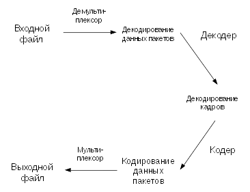
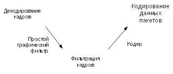
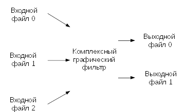
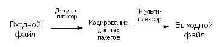

Документация по FFmpeg
Перевод страницы http://ffmpeg.org/ffmpeg.html от 13 февараля 2016 г.
Файл скачан из блога «Чтиво». http://chtivo.by/blog/ и доработан Xintrea.
19.10.2016 - Текст выправлен до главы 5. Опции.
См. так же прикрепленный PDF (необработанная версия, сырой машинный перевод)
1. Сводка
2. Описание
3. Подробное описание
3.1. Фильтрация
3.1.1. Простые графические фильтры
3.1.2. Комплексные графические фильтры
3.2. Копия потока
4. Выбор потока
5. Опции
5.1. Спецификаторы потоков
5.2. Общие опции
5.3. Опции AV
5.4. Основные опции
5.5. Опции видео
5.6. Расширенные опции видео
5.7. Опции аудио
5.8. Расширенные опции аудио
5.9. Опции субтитров
5.10. Расширенные опции субтитров
5.11. Дополнительные опции
5.12. Предустановленные файлы
5.12.1. ffpreset файлы
5.12.2. avpreset файлы
6. Примеры
6.1. Видео и аудио захвата
6.2. X11-захват
6.3. Видео и аудио форматы преобразования файлов
7. Смотрите также
8. Авторы
Синтаксис команды следующий:
ffmpeg [глобальные_опции]
{[опции_входного файла] -i input_file} ...
{[опции_выходного файла] output_file} ...
То есть, действует правило: вначале опции, потом файл. Другими словами, опции влияют на указанный далее файл. Историческая особенность: входной файл указывается через опцию -i, а выходной файл указыватся просто как имя файла, без опции.
ffmpeg является очень быстрым видео- и аудиоконвертером, который может также производить захват с аудио-источника или источника живого видео. Он также может конвертировать видео, произвольно менять частоты дискретизации, измененять размер видео на лету, применять множество высококачественных фильтров.
ffmpeg считывает данные из произвольного количества входных потоков (которые могут быть обычными файлами, трубами, сетевыми потоками, устройствами захвата и т.д.), которые указываются в опции -i, и записывает в выходной файл или поток. Все опции командной строки, которые не могут быть истолкованы в качестве опции, будут рассматриваться в качестве имени выходного файла.
Каждый входной или выходной файл может, в принципе, содержать любое количество потоков разных типов (video/audio/subtitle/attachment/data). Допустимое количество и/или типы потоков могут быть ограничены форматом контейнера. Выбор того, какие потоки из какого входа будут идти в какой выход делается либо автоматически, либо с помощью опции -map (см. главу Выбор потока).
Чтобы обратиться к входным файлам, необходимо использовать их индексы (счет идет с нуля). Например, первый входной файл 0 , второй 1 , и т.д. Аналогично, потоки внутри файла обозначаются по их индексам. Например, 2:3 относится к четвертому потоку в третьем файле входного сигнала. Также см. спецификаторы в главе о потоках.
Как правило, опции применяются к следующему после них указанному файлу. Поэтому важен порядок, но вы можете использовать один и тот же вариант несколько раз в командной строке. Каждое вхождение затем применяется к следующему входному или выходному файлу. (Эти два предложения не совсем понятны - прим. переводчика). Исключения из этого правила являются глобальные параметры, которые должны быть заданы первыми.
Важно не смешивать входные и выходные файлы - сначала надо указать все входные файлы, а затем все выходные файлы. Также не следует смешивать варианты опций, которые принадлежат к разным файлам. Все варианты применяются только к следующему входному или выходному файлу и сбрасываются между файлами.
Примеры. Установка битрейта видео в выходном файле до 64 кбит / с:
ffmpeg -i input.avi -b: v 64k -bufsize 64k output.avi
Чтобы установить частоту кадров выходного файла в 24 кадров в секунду:
ffmpeg -i input.avi -r 24 output.avi
Чтобы задать частоту кадров входного файла (действителен только для "сырых" форматов) в 1 кадр/сек и частоту кадров выходного файла в 24 кадров в секунду:
ffmpeg -r 1 -i input.m2v -r 24 output.avi
Установка формата могут быть необходимы для сырых входных файлов.
Процесс транскодирования в ffmpeg для каждого файла может быть описан в следующей диаграмме:

ffmpeg вызывает библиотеку libavformat (содержащую алгоритмы демультиплексирования) для чтения входных файлов и получает пакеты, содержащие кодированные данные. При наличии нескольких входных файлов, ffmpeg пытается синхронизировать их путем отслеживания меток с низкой задержкой в активном входном потоке.
Закодированные пакеты затем передаются в декодер (если копирование потока не будет выбрано для потока, см описание далее). Декодер создает несжатые кадры (сырой video/PCM audio/...), которые могут быть обработаны дополнительно, путем фильтрации. После фильтрации кадры передаются в кодер, который кодирует их и выводит кодированные пакеты. Наконец те, передаются в мультиплексор, который записывает кодированные пакеты в выходной файл.
Перед кодированием, ffmpeg может обрабатывать сырые аудио- и видеокадры с помощью фильтров из библиотеки libavfilter. Несколько фильтров, выстроенных в цепочку, образуют граф фильтров. ffmpeg различает два типа filtergraphs: простые и сложные.
3.1.1. Простые графические фильтры
Простыми фильрами (filtergraphs) считаются те, которые имеют в точности один вход и выход, причем оба одного и того же типа. В приведенной выше диаграмме они могут быть представлены просто путем вставки дополнительного этапа между кодированием и декодированием:

Простые filtergraphs создаются с помощью опции -filter для каждого потока (Псевдонимы -vf и -af используются соответственно для видео и аудио). Простой filtergraph для видео может выглядеть, например, следующим образом:
Обратите внимание, что некоторые фильтры изменяют свойства кадров, но не содержимое кадров. Например, fps фильтр изменяет количество кадров, но не трогает содержимое кадров. Другим примером является фильтр setpts , который устанавливает только временные метки и передает кадры неизменными.
3.1.2. Комплексные графические фильтры
Комплексными фильтрами являются те, которые не могут быть описаны как просто линейная цепочка обработки, примененная к одному потоку. Такое возможно, например, когда граф имеет более одного входа и/или выхода, или, когда тип выходного потока отличается от входного. Такие фильтры могут быть представлены следующей диаграммой:

Комплексные фильтры настраиваются с помощью опции -filter_complex. Обратите внимание, что эта опция является глобальной, поскольку комплексные фильтры, по своей природе, не могут быть однозначно связаны с одним потоком или файлом.
Примечание: параметр -lavfi эквивалентен -filter_complex.
Тривиальным примером сложного фильтра является overlay фильтр, который имеет два видеовхода и один видеовыход, где одно видео накладывается поверх другого. Его аудио-партнером является amix фильтр.
Копия потока является механизмом, задаваемым параметром copy в опции -codec. Эта опция заставляет ffmpeg пропустить этап декодирования и этап кодирования для указанного потока (т. е. работа идет с "сжатыми" данными), так что остается только демультиплексирование и мультиплексирование. Это полезно для изменения формата контейнера или для модификации метаданных контейнера. Диаграмма, приводимая ранеее, в этом случае, упрощается следующим образом:

Так как нет декодирования или кодирования, это преобразование работает очень быстро и нет потери качества. Тем не менее, оно не может работать в некоторых случаях из-за многих факторов. Применение фильтров, очевидно, также невозможно, так как фильтры работают на несжатых данных.
По умолчанию, ffmpeg включает в себя только один поток каждого типа (видео, аудио, субтитры), находящихся во входных файлах, и добавляет их в каждый выходной файл. Для выходных данных принимаются лучшие параметры на основе следующих критериев: для видео, это поток с более высоким разрешением, для аудио, это поток с наибольшим количеством каналов, для субтитров это первый поток субтитров. В случае, когда есть несколько входных потоков с той же скоростью и типом, для получения выходных параметров выбирается поток с меньшим порядковым номером.
Можно отключить такое стандартное поведение, указав опции -vn/-an/-sn. Для полного ручного управления можно использовать опцию -map, которая отключает выбор параметров выходного потока по-умолчанию.
Все численные параметры, если не указано иное, принимают строку, представляющую число в качестве входных данных, которое может сопровождаться одним из единичных суффиксов (в оригинале - префиксов, непонятно почему) в системе измерений СИ, например: 'K', 'M', или 'G'.
Если 'i' добавляется к блоку приставкой SI, полный префикс будет интерпретироваться как единичный префикс для кратных бинарных, которые основаны на степенях 1024 вместо полномочий 1000. Добавление 'B' в единицы SI префикс умножает значение на 8. Это позволяет использовать, например: 'KB', 'MiB', 'G' и 'B', как количество суффиксов. (Этот абзац надо доработать)
Варианты, которые принимают аргументы логических опций, считаются соответствующими значению true. Они могут быть установлены в false, если предварить имя параметра строкой "no". Например, использование опции "-nofoo" установит флаг логического типа с именем "foo" в false.
Некоторые опции применяются к конкретным потокам, например битрейт кодека. Спецификатор потока используются для точного определения, к какому конкретно потоку/потокам применяется опция.
Спецификатор потока является строкой, и обычно добавляется к имени опции и отделен от него двоеточием. Возможные имена спецификаторов:
Например, опция -codec:a:1 ac3 содержит спецификатор потока a:1 , который соответствует второму аудиопотоку. В данном случае кодек ac3 выбран для второго аудиопотока.
Спецификатор потока может соответствовать нескольким потокам, так что эта опция может применяться ко всем потокам одного типа сразу. Например, спецификатор потока -b:a 128k соответствует всем аудиопотокам.
Пустой спецификатор потока означает все потоки. Например, -codec copy или -codec: copy будет копировать все потоки без перекодирования.
Возможными формами спецификаторов потока являются:
stream_index
Матчи поток с этим индексом. Например -threads:1 4 будет установить счетчики потока для второго потока до 4.
stream_type [: stream_index]
stream_type является одним из следующего: 'v' или 'V' для видео, 'а' для аудио, 'S' для субтитров, 'D' для данных, и «т» для вложения. 'V' соответствует всем видеопотоков, «V» соответствует только видеопотоки, которые не прикреплены фотографии, эскизы видео или обложек. Если stream_index задан, то он соответствует номер потока stream_index данного типа. В противном случае, он соответствует все потоки данного типа.
р: program_id [: stream_index]
Если stream_index задан, то он соответствует поток с номером stream_index в программе с program_id идентификатором. В противном случае, он соответствует всем потоков в программе.
#stream_id или i:stream_id
Подходим поток потоком личности (например, ПИД в контейнере MPEG-TS).
m:key[:value]
Матчи потоков с помощью ключа тэгов метаданных, имеющего заданное значение. Если значение не задано, спички потоки, которые содержат данную метку с любым значением.
U
Матчей потоки с полезной конфигурации, кодек должен быть определен и важнейшей информации, такой как видео измерение или аудио дискретизации должна присутствовать.
Отметим, что в ffmpeg , соответствие по метаданным будет корректно работать только для входных файлов.
Эти параметры являются общими среди FF* инструментов.
-L
Показать лицензию.
-h, - ?, -help, --help [arg]
Показать справку. Необязательный параметр может быть задан для печати помощь о конкретному пункту. Если не указано никаких аргументов, только основные (не расширенный) параметры инструмента показаны.
Возможные значения аргумента являются:
long
Печать дополнительных параметров инструмента в дополнение к основным параметры инструмента.
full
Печать полный список параметров, в том числе общих и частных вариантов кодеров, декодеров, демультиплексирования, мультиплексорами, фильтры и т.д.
decoder=decoder_name
Печать подробную информацию об декодера названы decoder_name. Используйте опцию -decoders чтобы получить список всех декодеров.
encoder=encoder_name
Печать подробную информацию о датчика имени encoder_name. Используйте опцию -encoders чтобы получить список всех датчиков.
demuxer=demuxer_name
Печать подробную информацию о демультплексора имени demuxer_name. Используйте -formats возможность получить список всех демультиплексорами и мультиплексорами.
muxer=muxer_name
Печать подробную информацию о мультплексор имени muxer_name. Используйте -formats возможность получить список всех мультиплексорами и демультиплексирования.
filter=filter_name
Печать подробную информацию об имени фильтра FILTER_NAME. Используйте опцию -filters, чтобы получить список всех фильтров.
-version
Показать версию.
-formats
Показать доступные форматы (в том числе устройств).
-devices
Показать доступные устройства.
-codecs
Показать все кодеки известные кодеком.
Отметим, что термин "кодек" используется в технической документации в качестве ярлыка для того, что более правильно называть формат мультимедийный битовый.
-decoders
Показать доступные декодеры.
-encoders
Показать все доступные кодеры.
-bsfs
Показать доступные битового потока фильтры.
-protocols
Показать доступные протоколы.
-filters
Показать доступные libavfilter фильтры.
-pix_fmts
Показать доступные форматы пиксела.
-sample_fmts
Показать доступные форматы образца.
-layouts
Показать названия каналов и стандартные форматы канала.
-colors
Показать признаны названия цветов.
-sources device[,opt1=val1[,opt2=val2]...]
Показать перекрытые источники intput устройства. Некоторые устройства могут обеспечить имена источников системно-зависимые, которые не могут быть автоматически. Возвращаемый список не может считаться всегда полная.
ffmpeg -sources pulse,server=192.168.0.4
-sinks device[,opt1=val1[,opt2=val2]...]
Показать определяется автоматически поглотителей устройства вывода. Некоторые устройства могут обеспечить системно-зависимые имена раковины, которые не могут быть автоматически. Возвращаемый список не может считаться всегда полная.
ffmpeg -sinks pulse,server=192.168.0.4
-loglevel [repeat+]loglevel | -v [repeat+]loglevel
Установите уровень ведения используется библиотекой. Добавление "повторите +" означает, что повторять вывод журнала не должно быть сжат до первой линии и линия "Последнее сообщение повторяется п раз" будет опущено. "Повтор" также может быть использован в одиночку. Если "повторить" используется в одиночку, и без предварительного набора LOGLEVEL, будет использоваться LogLevel по умолчанию. При наличии нескольких параметров LOGLEVEL даны, используя 'Repeat' не изменит LogLevel LogLevel является строка или число, содержащее одно из следующих значений.:
‘quiet, -8’
Показать вообще ничего; Молчи.
‘panic, 0’
Показывать только фатальные ошибки, которые могут привести процесс к аварийному, например, и утверждать провал. Это время не используется для чего-либо.
‘fatal, 8’
Показывать только фатальные ошибки. Это ошибки, после чего процесс абсолютно не может продолжаться после.
‘error, 16’
Показать все ошибки, в том числе те, которые могут быть извлечены из.
‘warning, 24’
Показать все предупреждения и ошибки. будет показано Любое сообщение, связанные с возможно неправильных или неожиданных событий.
‘info, 32’
Показать информативные сообщения во время обработки. Это в дополнение к ошибок и предупреждений. Это значение по умолчанию.
‘verbose, 40’
То же, что info , за исключением более подробный.
‘debug, 48’
Показать все, в том числе информацию об отладке.
‘trace, 56’
По умолчанию журналы программы в стандартный поток ошибок, если окраска поддерживается терминалом, цвета используются для обозначения ошибок и предупреждений. Вход окраска может быть отключена, установив переменную окружения AV_LOG_FORCE_NOCOLOR или NO_COLOR , или может быть принужден установив переменную окружения AV_LOG_FORCE_COLOR . Использование переменной окружения NO_COLOR устарела и будет отброшен в следующей версии FFmpeg.
-report
Самосвал всю командную строку и консольный вывод в файл с именем program - YYYYMMDD - HHMMSS .log в текущей директории. Этот файл может быть полезно для сообщений об ошибках. Это также подразумевает -loglevel verbose .
Установка переменной среды FFREPORT любое значение имеет тот же эффект. Если значение является ':' - последовательность разделенных ключ = значение, эти варианты будут влиять на отчет; Значения опции должны быть экранированы, если они содержат специальные символы или опции разделитель ':' (см "Цитирование и ускользающей» секция FFMpeg-утилиты руководстве).
Следующие параметры отражаются:
file
установить имя файла для отчета; %p расширяется до имени программы, %t увеличивается до временной отметки, %% расширяется до простой %
level
установить уровень детализации журнала, используя численное значение (см -loglevel ).
Например, для вывода отчета в файл с именем ffreport.log помощью уровень регистрации 32 (псевдоним для уровня журнала info ):
FFREPORT=file=ffreport.log:level=32 ffmpeg -i input output
Ошибки в разборе переменной среды не являются фатальными, и не будет отображаться в отчете.
-hide_banner
Подавить печать баннера.
Все инструменты FFmpeg обычно показывают уведомление об авторском праве, строить варианты и версии библиотеки. Эта опция может быть использована для подавления напечатать эти сведения.
-cpuflags flags (global)
Позволяет установка и очистка процессорного флаги. Эта опция предназначена для тестирования. Не используйте его, если вы не знаете, что вы делаете.
ffmpeg -cpuflags -sse+mmx ...
ffmpeg -cpuflags mmx ...
ffmpeg -cpuflags 0 ...
Возможные флаги для этой опции:
'X86'
'MMX'
'Mmxext'
'SSE'
'SSE2'
'Sse2slow'
'SSE3'
'Sse3slow'
'SSSE3'
'atom'
'SSE4.1'
'SSE4.2'
'AVX'
'AVX2'
'XOP'
'Fma3'
'Fma4'
'3DNow'
'3dnowext'
'Bmi1'
'Bmi2'
'CMOV'
'ARM'
'Armv5te'
'ARMv6'
'Armv6t2'
'VFP'
'VFPv3'
'neon'
'Setend'
'AArch64'
'Armv8'
'VFP'
'neon'
'PowerPC'
'AltiVec'
'Конкретных процессоров'
'Pentium2'
'Pentium3'
'Pentium4'
'K6'
'K62'
'Athlon'
'AthlonXP'
'K8'
-opencl_bench
Эта опция используется для сравнения всех доступных устройств OpenCL и распечатать результаты. Эта опция доступна только тогда, когда FFmpeg был собран с --enable-opencl .
Когда FFmpeg конфигурируется с --enable-opencl , варианты глобальном контексте OpenCL задаются через -opencl_options. В разделе «OpenCL Options» в руководстве FFmpeg-Utils для получения полного списка поддерживаемых опций. Среди прочего, эти варианты включают возможность выбора конкретной платформы и устройства для запуска кода OpenCL на. По умолчанию, FFmpeg будет работать на первом устройстве на первую платформу. В то время как варианты глобальном контексте OpenCL обеспечивают гибкость для пользователя в выборе OpenCL устройство по своему выбору, большинство пользователей, вероятно, хотите бы выбрать самый быстрый OpenCL устройство для их системы.
Эта опция помогает выбор наиболее эффективной конфигурации путем выявления соответствующее устройство для системы пользователя. Встроенный бенчмарк работать на всех OpenCL устройств и производительность измеряется для каждого устройства. Устройства в списке результатов сортируются в зависимости от их производительности с самым быстрым устройством в порядке убывания. Пользователь может впоследствии вызвать ffmpeg с помощью устройства, которую считают наиболее целесообразным с помощью -opencl_options получить наилучшую производительность для ускоренного кода OpenCL.
Типичное использование использовать самый быстрый OpenCL устройство включает следующие этапы.
Выполните следующую команду:
ffmpeg -opencl_bench
Запишите Platform ID (PIDX) и идентификатор устройства (didx) первого т.е. быстрый устройства в списке. Выберите платформу и устройство с помощью команды:
ffmpeg -opencl_options platform_idx=pidx:device_idx=didx ...
-opencl_options options (global)
Настройка параметров среды OpenCL. Эта опция доступна только тогда, когда FFmpeg был собран с --enable-opencl .
параметры должны быть список ключевых пар = опционных значение, разделенных ':'. В разделе «OpenCL Options" в руководстве FFmpeg-утилиты для списка поддерживаемых опций.
Эти опции предусмотрены непосредственно libavformat, libavdevice и кодеком библиотеки. Чтобы увидеть список доступных AVOptions, используйте опцию -help. Они разделены на две категории:
generic
Эти параметры могут быть установлены для любого контейнера, кодек или устройства. Общие параметры перечислены в разделе Параметры AVFormatContext для контейнеров / устройств и по опционам AVCodecContext для кодеков.
private
Эти параметры относятся к данному контейнера, устройства или кодека. Частные варианты перечислены в их соответствующих контейнеров / устройств / кодеков.
Например, чтобы написать ID3v2.3 заголовок вместо ID3v2.4 по умолчанию к MP3-файла, используйте id3v2_version личное вариант МР3 мультиплексор:
ffmpeg -i input.flac -id3v2_version 3 Out.mp3
Все кодеки опции AVOptions указаны за-поток, и таким образом поток спецификатор должен быть прикреплен к ним.
Примечание: синтаксис -nooption не могут быть использованы для логических AVOptions, использовать -option 0 / -option 1.
Примечание: старый недокументированные способ задания за потоком AVOptions, предваряя V / A / с до Имя в настоящее время устарели и будут удалены в ближайшее время.
-f fmt (input/output)
Усилие или формат выходного файла. Формат обычно определяется автоматически для входных файлов и догадался по расширению файла для выходных файлов, поэтому эта опция не нужна в большинстве случаев.
-i filename (input)
Имя входного файла
-y (global)
Переписать выходные файлы без запроса.
-n (global)
Не перезаписывать выходные файлы, и выйти немедленно, если указанный выходной файл уже существует.
-stream_loop number (input)
Установить количество раз входного потока должна быть петлю. Петля 0 означает никакой цикл, петля -1 означает бесконечный цикл.
-c[:stream_specifier] codec (input/output,per-stream)
-codec[:stream_specifier] codec (input/output,per-stream)
Выберите кодер (когда используется перед выходной файл) или декодер (при использовании ранее входного файла) для одного или нескольких потоков. Кодек название декодера / кодера или специальное значение copy (выход только), чтобы указать, что поток не следует перекодировать.
Например
ffmpeg -i INPUT -map 0 -c:v libx264 -c:a copy OUTPUT
кодирует все видеопотоки с libx264 и копии любых аудио-потоков.
Для каждого потока, последний соответствующий c вариант применяется, так
ffmpeg -i INPUT -map 0 -c copy -c:v:1 libx264 -c:a:137 libvorbis OUTPUT
будет копировать все потоки, кроме второго видео, которое будут закодированы с libx264 и 138 аудио, который будет кодированного с libvorbis.
-t duration (input/output)
При использовании в качестве опции ввода (до -i ), ограничить продолжительность данных, считанных из входного файла.
При использовании в качестве выходной вариант (перед выходным файла), прекратить писать выход после его продолжительность достигает продолжительность.
Продолжительность должна быть спецификация времени продолжительность см (FFmpeg-утилиты) раздел продолжительности времени в FFmpeg-утилит (1) ручной .
-в и -t являются взаимоисключающими и -t имеет приоритет.
-to position (output)
Хватит писать вывод в положении. Позиция должна быть спецификация времени продолжительность см (FFmpeg-утилиты) раздел продолжительности времени в FFmpeg-утилит (1) ручной .
-to и -t являются взаимоисключающими и -t имеет высший приоритет.
-fs limit_size (output)
Установить предельный размер файла, выраженный в байтах. Никакой дополнительной порции байтов не написано после превышения лимита. Размер выходного файла является немного больше, чем требуемый размер файла.
-ss position (input/output)
При использовании в качестве опции ввода (перед -i ), стремится в этом входном файле в положение. Обратите внимание, что в большинстве форматов это не возможно, чтобы искать точно, так ffmpeg будет стремиться ближе искать точку перед положении. При перекодировании и -accurate_seek включена (по умолчанию), этот дополнительный отрезок между точкой поиска и позиции будут расшифрованы и отбрасывают. При выполнении потока копию или когда -noaccurate_seek используется, она будет сохранена.
При использовании в качестве выходной вариант (перед выходным файла), декодирует но вход сбрасывает до метки времени не достигнет позиции.
позиция должна быть спецификация времени продолжительность см (FFmpeg-утилиты) раздел продолжительности времени в FFmpeg-утилит (1) ручной .
-sseof position (input/output)
Как -ss вариант но по отношению к "концу файла". То есть отрицательные значения в начале файла, 0 находится в EOF.
-itsoffset offset (input)
Установите время ввода смещения.
offset должно быть указание времени продолжительность.
Смещение добавляется к временных меток входных файлов. Указание положительное смещение означает, что соответствующие потоки с задержкой по времени продолжительности, указанной в offset.
-timestamp date (output)
Установите метку записи в контейнере.
Дата должна быть спецификация дата см (FFmpeg-утилиты) раздел дата в FFmpeg-утилит (1) ручной .
-metadata[:metadata_specifier] key=value (output,per-metadata)
Установите пару метаданные ключ=значение.
Опционально metadata_specifier может быть дано установить метаданных на потоках, глав или программ. См -map_metadata документации.
Эта опция переопределяет набор метаданных с -map_metadata . Можно также удалить метаданные с помощью пустого значения.
Например, для установки титул в выходном файле:
ffmpeg -i in.avi -metadata title="my title" out.flv
Для установки языка первого аудиопотока:
ffmpeg -i INPUT -metadata:s:a:0 language=eng OUTPUT
-program [title=title:] [program_num=program_num:] st=stream [:st=stream...] (output)
Создает программу с указанной главы (title), program_num и добавляет указанный поток(и) (stream) к ней.
-target type (output)
Укажите тип выходного файла ( vcd , svcd , dvd , dv , dv50 ). Тип может иметь префикс pal- , ntsc- или film- использовать соответствующий стандарт. Все варианты формата (битрейт, кодеков, буферные размеры) затем устанавливается автоматически. Вы можете просто ввести:
ffmpeg -i myfile.avi -target vcd /tmp/vcd.mpg
Тем не менее вы можете указать дополнительные параметры тех пор, пока вы знаете, они не конфликтуют со стандартом, как в:
ffmpeg -i myfile.avi -target vcd -bf 2 /tmp/vcd.mpg
-dframes number (output)
Установите количество кадров данных для вывода. Это псевдоним для -frames:d .
-frames[:stream_specifier] framecount (output,per-stream)
Хватит писать в поток после FrameCount кадров.
-q[:stream_specifier] q (output,per-stream)
-qscale[:stream_specifier] q (output,per-stream)
Используйте фиксированный масштаб качества (VBR). Смысл кв / qscale является кодек-зависимыми. Если qscale используется без stream_specifier то применяется только к видеопотока, это, чтобы сохранить совместимость с предыдущей поведения и как указание одинакового кодека конкретное значение 2 различными кодеками, что это аудио и видео, как правило, не то, что предназначено, когда нет stream_specifier используется.
-filter [: stream_specifier] filtergraph (output,per-stream)
Создание filtergraph указанный filtergraph и использовать ее для фильтрации потока.
filtergraph является описание filtergraph применить к потоку, и должен иметь один вход и один выход того же типа потока. В filtergraph, вход связан с этикеткой in и выходом на этикетке out. Смотрите руководство FFmpeg-фильтры для получения дополнительной информации о синтаксисе filtergraph.
См -filter_complex вариант , если вы хотите создать filtergraphs с несколькими входами и / или выходами.
-filter_script[:stream_specifier] filename (output,per-stream)
Эта опция похожа на k-фильтра, с той лишь разницей, что ее аргумент является именем файла, из которого описание filtergraph должен рассматриваться.
-pre[:stream_specifier] preset_name (output,per-stream)
Предустановленного для согласования потока (ов).
-stats (global)
Печать кодирующий проделанной работе / статистики. Это по умолчанию, чтобы явно отключить его необходимо указать -nostats .
-progress url (global)
Отправить программный людей информацию о ходе URL.
Сведения о ходе написано приблизительно каждый второй и в конце процесса кодирования. Он изготовлен из "ключ = значение" линий. Ключ состоит только из алфавитно-цифровых символов. Последний ключ последовательности информации прогресс всегда «прогресс».
-stdin
Обеспечение взаимодействия со стандартного ввода. По умолчанию, если стандартный ввод не используется в качестве входного сигнала. Чтобы явно отключить взаимодействие необходимо указать -nostdin .
Отключение взаимодействия на стандартном вводе полезно, например, если FFmpeg находится в группе фонового процесса. Примерно такой же результат может быть достигнут с ffmpeg ... < /dev/null , но это требует оболочку.
-debug_ts (global)
Печать метки времени информацию. Это по умолчанию отключена. Эта опция в основном используется для тестирования и отладки, а выходной формат может меняться от одной версии к другой, поэтому он не должен быть использован переносными скриптов.
Смотрите также опцию -fdebug ts .
-attach filename (output)
Добавление вложения в выходной файл. Это подтверждается несколькими форматы, такие как Matroska, например, для шрифтов, используемых при оказании субтитры. Оснастка реализованы в виде конкретного типа потока, так что этот вариант будет добавить новый поток в файл. В этом случае можно использовать за потоком варианты в этом потоке в обычном порядке. Приложение потоки, созданные с помощью этой опции будет создана после всех других потоков (т.е. тех, которые созданы с -map или автоматических отображений).
Заметим, что для Matroska вы также должны установить тег MimeType метаданных:
ffmpeg -i INPUT -attach DejaVuSans.ttf -metadata:s:2 mimetype=application/x-truetype-font out.mkv
(При условии, что поток вложений будет третий в выходном файле).
-dump_attachment[:stream_specifier] filename (input,per-stream)
Выписка поток вложений соответствия в файл с именем файла. Если имя файла пустое, то значение filename будет использоваться тег метаданных.
Например, чтобы извлечь первую вложение в файл с именем 'out.ttf':
ffmpeg -dump_attachment:t:0 out.ttf -i INPUT
Чтобы извлечь все вложения к файлам, определяемых filename тега:
ffmpeg -dump_attachment:t "" -i INPUT
Техническое примечание - вложения реализованы как кодек ExtraData, поэтому эта опция действительно может быть использован для извлечения ExtraData из любого потока, а не только вложений.
-noautorotate
Отключение автоматически поворачивать видео на основе метаданных файла.
-vframes number (output)
Установите количество видеокадров для вывода. Это псевдоним для -frames:v .
-r [:stream_specifier] FPS (input/output,per-stream)
Установите частоту кадров (значение Гц, фракция или аббревиатура).
В качестве опции ввода, игнорировать любые временные метки, хранящиеся в файле, а вместо этого генерировать временные метки при постоянном кадров в секунду частоту кадров. Это не то же самое, -framerate опции, используемой для некоторых входных форматов, таких как image2 или v4l2 (он будет использоваться то же самое в более старых версиях FFmpeg). В случае сомнений использовать -framerate вместо опции ввода -r.
В качестве опции вывода, дублировать или удалить входные кадры для достижения постоянного кадров в секунду частоту кадров выходного.
--s[:stream_specifier] size (input/output,per-stream)
Набор размер кадра.
В качестве опции ввода, это сокращение для video_size частного варианта, признанного некоторыми демультиплексорами для которых размер кадра либо не хранятся в файле или конфигурируется - например сырой видео или видео хапуг.
Как вариант выходного, это вставляет scale видеофильтр к концу соответствующего filtergraph. Воспользуйтесь scale фильтр непосредственно, чтобы вставить его в начале или в другое место.
Формат ‘wxh’ (по умолчанию - такой же, как источника).
-aspect[:stream_specifier] aspect (output,per-stream)
Установите соотношение сторон дисплея видео указанный aspect.
aspect может быть целый ряд точка строку плавающий, или строку вида num:den, где пит и den являются числитель и знаменатель соотношения сторон. Например, "4:3", "16:9", "1,3333" и "1.7777" являются допустимыми значениями аргумента.
Если вместе с -vcodec copy, она будет влиять на соотношение сторон хранимой на уровне контейнера, но не пропорции сохраняются в кодированных кадров, если она существует.
-vn (output)
Отключить запись видео.
-vcodec codec (output)
Установить видеокодек. Это псевдоним для -codec:v .
-pass[:stream_specifier] n (output,per-stream)
Выберите частот число (1 или 2). Он используется, чтобы сделать два прохода кодирования видео. Статистика видео записываются в первом проходе в лог-файл (см также вариант -passlogfile), а во втором проходе, что лог-файл используется для генерации видео на точное запрашиваемой битрейтом. На проходе 1, вы можете просто отключить звук и установить выход в NULL, примеры для ОС Windows и Unix:
ffmpeg -i foo.mov -c:v libxvid -pass 1 -an -f rawvideo -y NUL
ffmpeg -i foo.mov -c:v libxvid -pass 1 -an -f rawvideo -y /dev/null
-passlogfile[:stream_specifier] prefix (output,per-stream)
Установить два прохода префикс имени файла журнала в качестве префикса, префикс имени файла по умолчанию является "ffmpeg2pass". Полное имя файла будет PREFIX-N.log , где N представляет собой число характерных для выходного потока
-vf filtergraph (output)
Создание filtergraph указанный filtergraph и использовать ее для фильтрации потока.
Это псевдоним для -filter:v , см вариант -filter .
-pix_fmt[:stream_specifier] format (input/output,per-stream)
Заданный формат пикселей. Используйте -pix_fmts чтобы показать все поддерживаемые форматы пиксельных. Если выбранный формат пикселей не может быть выбран, FFmpeg будет выдавать предупреждение и выбрать лучший формат пикселей поддерживается датчиком. Если pix_fmt является префиксом + , FFmpeg будет завершаться с ошибкой, если запрашиваемая формат пикселей не может быть выбран, и автоматические преобразования внутри filtergraphs отключены. Если pix_fmt представляет собой единый + , FFmpeg выбирает тот же формат пикселя в качестве входного (или выходного графика) и автоматическое преобразование отключены.
-sws_flags flags (input/output)
Набор программного модуля масштабирования флаги.
-vdt n
Отменить порог.
-rc_override[:stream_specifier] override (output,per-stream)
Управление скоростью дублирование определенные промежутки, в формате "Int Int, Int," список разделенных косыми чертами. Два первых значения в начале и конце номера кадров, последний из которых является квантования для использования, если положительное, или добротность при отрицательном.
-ilme
Сила переплетение поддержка в кодера (MPEG-2 и MPEG-4 только). Используйте эту опцию, если ваш входной файл с чересстрочной разверткой, и вы хотите сохранить чересстрочный формат минимальными потерями. Альтернативой является деинтерлейсинг входного потока с-deinterlace , Но деинтерлейсинга вводит потерь.
-psnr
Рассчитать PSNR сжатых кадров.
-vstats
Самосвал Video Coding статистические данные vstats_HHMMSS.log ,
-vstats_file file
Самосвал видео кодирования статистику для подать .
-top[:stream_specifier] n (output,per-stream)
топ = 1 / низ = 0 / авто = -1 поле первое
-dc precision
Intra_dc_precision.
-vtag fourcc/tag (output)
Сила видео tag/fourcc. Это псевдоним для -tag:v.
-qphist (global)
Показать QP гистограммы
-vbsf bitstream_filter
Устаревшие см -bsf
-force_key_frames[:stream_specifier] time[,time...] (output,per-stream)
-force_key_frames[:stream_specifier] expr:expr (output,per-stream)
Принудительное ключевые кадры на заданных временных меток, точнее на первых кадрах после каждого указанного времени.
Если аргумент префикс выраж: строка выражение интерпретируется как выражение и вычисляется для каждого кадра. Ключевой кадр вынуждены в случае оценка не равна нулю.
Если один из раза " главы [ дельта ]", она раскрывается в момент начала всех глав в файле, сдвинутых на дельте , выраженное как время в секундах. Эта опция может быть полезна для обеспечения того, чтобы искать точки присутствует в метки раздела или любой другой назначенный место в выходном файле.
Например, чтобы вставить ключевой кадр на 5 минут, плюс ключевые кадры 0.1 секунды до начала каждой главы:
-force_key_frames 0:05:00,chapters-0.1
Выражение в expr может содержать следующие константы:
n - номер текущего обработанного кадра, начиная с 0
n_forced - количество вынужденных кадров
prev_forced_n - количество предыдущего принудительного кадре, это NAN когда нет ключевого кадра не был вынужден еще
prev_forced_t - время предыдущей принудительного кадре, это NAN когда нет ключевого кадра не был вынужден еще
t - время текущего обработанного кадра
Например, чтобы заставить ключевой кадр каждые 5 секунд, можно указать:
-force_key_frames expr:gte(t,n_forced*5)
Чтобы заставить ключевой кадр 5 секунд после момента последнего принудительного одной, начиная со второго 13:
-force_key_frames expr:if(isnan(prev_forced_t),gte(t,13),gte(t,prev_forced_t+5))
Обратите внимание, что вынуждает слишком много ключевых кадров очень вредно для алгоритмов в условных некоторых кодеров: использование фиксированной GOP варианты или подобное было бы более эффективным.
-copyinkf[:stream_specifier] (output,per-stream)
При выполнении потока копию, копировать также не ключевые кадры, найденные в начале.
-hwaccel[:stream_specifier] hwaccel (input,per-stream)
Используйте аппаратное ускорение для декодирования потока (ов) соответствия. Допустимые значения hwaccel являются:
none
Не используйте аппаратное ускорение (по умолчанию).
auto
Автоматически выбрать способ аппаратного ускорения.
vda
Используйте Apple, VDA аппаратное ускорение.
vdpau
Используйте VDPAU (Video Decode и презентация API для Unix) аппаратного ускорения.
dxva2
Использование DXVA2 (DirectX Video Acceleration) аппаратное ускорение.
qsv
Используйте ускорение Intel QuickSync Video для транскодирования видео.
В отличие от большинства других ценностей, эта опция не позволяет ускоренное декодирование (который используется автоматически при выборе QSV декодер), но ускоряется перекодирование, без копирования кадров в системную память.
Для того, чтобы работать, как декодер и кодер должен поддерживать QSV ускорение и фильтры не должны использоваться.
Эта опция не имеет никакого эффекта, если выбранный hwaccel недоступен или не поддерживается выбранным декодером.
Обратите внимание, что большинство методов ускорения предназначены для воспроизведения и не будет быстрее, чем программное декодирование на современных процессорах. Кроме того, FFmpeg , как правило, необходимо скопировать декодированные кадры из памяти GPU в системную память, что приводит к дальнейшей потере производительности. Эта опция таким основном, полезен для тестирования.
-hwaccel_device[:stream_specifier] hwaccel_device (input,per-stream)
Выберите устройство для использования аппаратного ускорения.
Эта опция имеет смысл только тогда, когда -hwaccelТакже указана опция. Его точное значение зависит от конкретного метода аппаратного ускорения выбранной.
vdpau
Для VDPAU, эта опция определяет дисплея X11 / экран, чтобы использовать. Если этот параметр не указан, то значение DISPLAY переменную окружения используется
dxva2
Для DXVA2, эта опция должна содержать номер видеоадаптера, чтобы использовать. Если этот параметр не задан, используется адаптер по умолчанию.
qsv
Для QSV, эта опция соответствует Valus из MFX_IMPL_ *. Допустимые значения:
auto
sw
hw
auto_any
hw_any
hw2
hw3
hw4
-hwaccels
Перечислите все методы аппаратного ускорения, поддерживаемые в этом билде FFmpeg.
-aframes number (output)
Установите число кадров звука до выхода. Это псевдоним для -frames:a.
-ar[:stream_specifier] freq (input/output,per-stream)
Установите звуковую частоту дискретизации. Для вывода потоков он установлен по умолчанию на частоту соответствующего входного потока. Для входных потоков эта опция имеет смысл только для аудио захвата устройства и сырьевых демультиплексирования и сопоставляется с соответствующими опциями Demuxer.
-aq q (output)
Установите качество звука (кодек конкретных, VBR). Это псевдоним для -q: а.
-ac[:stream_specifier] channels (input/output,per-stream)
Установите количество аудиоканалов. Для вывода потоков он установлен по умолчанию числа входных звуковых каналов. Для входных потоков эта опция имеет смысл только для аудио захвата устройства и сырьевых демультиплексирования и сопоставляется с соответствующими опциями Demuxer.
-an (output)
Отключение записи звука.
-acodec codec (input/output)
Установите звуковой кодек. Это псевдоним для -codec: а .
-sample_fmt[:stream_specifier] sample_fmt (output,per-stream)
Установите формат аудио сэмпла. Используйте -sample_fmts , чтобы получить список поддерживаемых форматов сэмплов.
-af filtergraph (output)
Создание filtergraph указанный filtergraph и использовать ее для фильтрации потока.
Это псевдоним для -filter:a , видите опцию -filter .
-atag fourcc/tag (output)
Принудительное категории Аудио / FourCC. Это псевдоним для в -tag:a.
-absf bitstream_filter
Устаревшие см -bsf
-guess_layout_max channels (input,per-stream)
Если некоторые макет входной канал не известно, пытаются угадать, только если она соответствует не более указанного количества каналов. Например, 2 рассказывает FFMpeg признать 1 канал как моно и 2 каналы, как стерео, но не 6 каналов как 5,1. По умолчанию всегда пытаются угадать. Используйте 0 для отключения всех гадать.
-scodec codec (input/output)
Установите кодек субтитров. Это псевдоним для -codec: S .
-sn (output)
Отключить запись субтитров.
-sbsf bitstream_filter
Устаревшие см -bsf
5.10. Расширенные опции субтитров
-fix_sub_duration
Fix субтитры длительности. Для каждого подзаголовка, ждать следующего пакета в тот же поток и настроить длительность первой, чтобы избежать дублирования. Это необходимо с некоторыми субтитрами кодеков, особенно DVB субтитров, так как продолжительность в исходном пакете только грубая оценка, а конец на самом деле отмечен пустой рамке субтитров. Если не использовать эту опцию, если необходимо, может привести в преувеличенных длительности или сбоев мультиплексирования благодаря немонотонные временными метками.
Обратите внимание, что эта опция не будет задерживать вывод всех данных, пока следующий пакет субтитров декодируется: он может увеличить потребление памяти и задержки много.
-canvas_size size
Установить размер холста используется для визуализации субтитров.
-map [-]input_file_id[:stream_specifier],sync_file_id[:stream_specifier]] | [linklabel] (output)
Назначить одного или нескольких входных потоков в качестве источника для выходного файла. Каждый входной поток идентифицируется индексом входного файла input_file_id и индекса входного потока input_stream_id внутри входного файла. Оба индексы начинаются с 0. Если указано, sync_file_id : stream_specifier множеств, входной поток используется в качестве эталона презентация синхронизации.
Первый -map параметр в командной строке указывает источник для выходного потока 0, второй -map параметр определяет источник выходной поток 1 и т.д.
- Символ перед идентификатором потока создает "негативный" отображение. Это отключает соответствующие потоки из уже созданных отображений.
Альтернатива [LinkLabel] Форма будет отображать выходы из сложных графиков фильтра (см-filter_complexопция) в выходной файл. LinkLabel должны соответствовать определенным ярлыком выходным каналом связи в графе.
Например, чтобы отобразить все потоки от первого входного файла для вывода
ffmpeg -i INPUT -map 0 output
Например, если у вас есть два звуковых потоков в первом входном файле, эти потоки определены "0: 0" и "1: 0". Вы можете использовать -map выбрать, какие потоки разместить в выходной файл. Например:
ffmpeg -i INPUT -map 0:1 out.wav
будет отображать входной поток в ВХОД определены "0: 1" в (Single) выходной поток в out.wav ,
Например, чтобы выбрать поток с индексом 2 из входного файла a.mov (Задается идентификатором «0: 2»), и поток с индексом 6 от входа b.mov (Задается идентификатором «1: 6"), и скопировать их в выходной файл out.mov :
ffmpeg -i a.mov -i b.mov -c copy -map 0:2 -map 1:6 out.mov
Чтобы выбрать все видео и третий аудио поток из входного файла:
ffmpeg -i INPUT -map 0:v -map 0:a:2 OUTPUT
Чтобы сопоставить все потоки, кроме второго аудио, использовать отрицательные сопоставления
ffmpeg -i INPUT -map 0 -map -0:a:1 OUTPUT
Чтобы выбрать английский аудиопоток:
ffmpeg -i INPUT -map 0:m:language:eng OUTPUT
Обратите внимание, что использование этой опции отключает сопоставления по умолчанию для этого выходного файла.
-ignore_unknown
Игнорировать входные потоки с неизвестного типа вместо неудачу, если копирование таких потоков попытка.
-copy_unknown
Разрешить входных потоков с неизвестного типа, которые будут скопированы вместо сбоя, если копирование таких потоков попытка.
-map_channel [input_file_id.stream_specifier.channel_id|-1][:output_file_id.stream_specifier]
Карта аудиоканала от заданной входом с выходом. Если output_file_id . Stream_specifier не установлен, аудиоканал будет распределяться на всех аудиопотоков.
Используя "-1" вместо input_file_id . Stream_specifier . CHANNEL_ID будет отображать приглушенный канал.
Например, предположим, ВХОД является стерео аудио файл, вы можете переключать два аудиоканала с помощью следующей команды:
ffmpeg -i INPUT -map_channel 0.0.1 -map_channel 0.0.0 OUTPUT
Если вы хотите, чтобы отключить первый канал и сохранить второе:
ffmpeg -i INPUT -map_channel -1 -map_channel 0.0.1 OUTPUT
Порядок опции "-map_channel" определяет порядок каналов в выходной поток. Компоновка выходной канал догадаться из числа каналов, отображенных (моно если один "-map_channel", стерео, если два и т.д.). Используя "-ac" в комбинации "-map_channel" делает уровни усиления канала будет обновляться, если входные и выходные канальные макеты не совпадают (например два варианта "-map_channel" и "-ac 6").
Вы можете также извлекать каждый канал вклада в достижении конкретных результатов; следующая команда извлекает два канала ВХОД аудиопотока (файл 0, поток 0) до соответствующих OUTPUT_CH0 и OUTPUT_CH1 выходов:
ffmpeg -i INPUT -map_channel 0.0.0 OUTPUT_CH0 -map_channel 0.0.1 OUTPUT_CH1
В следующем примере разбивает каналы в стерео вход на два отдельных потока, которые ставятся в том же выходном файле:
ffmpeg -i stereo.wav -map 0:0 -map 0:0 -map_channel 0.0.0:0.0 -map_channel 0.0.1:0.1 -y out.ogg
Отметим, что в настоящее время каждый выходной поток может содержать только каналы из одного входного потока; Вы не можете, например, использовать "-map_channel" подобрать несколько входных аудиоканалов, содержащиеся в различных потоков (от той же или разных файлов) и объединить их в единый выходной поток. Поэтому в настоящее время невозможно, например, чтобы превратить два отдельных моно потоки в единый поток стерео. Однако разделения стерео поток на две одного моно канала потоков можно.
Если вам нужна эта функция, возможная решением является использование amerge фильтр. Например, если вам нужно объединить носители (здесьinput.mkv ) С 2 моно аудио потоков в один аудиопотока одним стерео канала (и держать видеопоток), вы можете использовать следующую команду:
ffmpeg -i input.mkv -filter_complex "[0:1] [0:2] amerge" -c:a pcm_s16le -c:v copy output.mkv
-map_metadata[:metadata_spec_out] infile[:metadata_spec_in] (output,per-metadata)
Набор метаданных информация следующего выходного файла из INFILE . Обратите внимание, что те показатели файлов (с нуля), а не имена файлов. Дополнительные metadata_spec_in / из параметры определяют, какие метаданные для копирования. Спецификатор метаданные могут иметь следующие формы:
g
Глобальный метаданные, т.е. метаданные, которые относится ко всему файлу
s[:stream_spec]
за потока метаданных. stream_spec представляет собой поток спецификатор, как описано в спецификаторов поток главе. В спецификатора ввода метаданных, первый поток соответствующий копируется из. В спецификатора выход метаданных, все соответствующие потоки копируются.
c:chapter_index
за главы метаданные. chapter_index является индекс главе с нуля.
p:program_index
за программы метаданных. program_index является индекс программы с нуля.
Если спецификатор метаданные опущен, то по умолчанию глобальный характер.
По умолчанию, глобальное метаданные копируются из первого входного файла, за потоком и за главу метаданные копируются вместе с потоками / разделов. Эти отображения по умолчанию отключена посредством создания любое отображение соответствующего типа. Отрицательное индексный файл может быть использован для создания фиктивного отображение, просто отключает автоматическое копирование.
Например, чтобы скопировать метаданные из первого потока входного файла в глобальном метаданных выходного файла:
ffmpeg -i in.ogg -map_metadata 0:s:0 out.mp3
Чтобы сделать наоборот, т.е. скопировать глобальный метаданные для всех аудио потоков:
ffmpeg -i in.mkv -map_metadata:s:a 0:g out.mkv
Следует отметить, что простое 0 будет работать, а в этом примере, поскольку глобальные метаданные предполагается по умолчанию.
-map_chapters input_file_index (output)
Скопируйте главы из входного файла с индексом input_file_index к следующему выходного файла. Если не указано глава отображение, то главы копируются из первого входного файла, по крайней мере одну главу. Используйте отрицательный показатель файла отключить любую главу копирование.
-benchmark (global)
Показать справочную информацию в конце кодирование. Показывает процессорное время, используемое и максимальное потребление памяти. Максимальное потребление памяти не поддерживается на всех системах, она, как правило отображаться как 0, если не поддерживается.
-benchmark_all (global)
Показать справочную информацию в процессе кодирования. Показывает время процессора, используемого в различных стадиях (аудио / видео кодирования / декодирования).
-timelimit duration (global)
Выход после FFmpeg работает уже в течение длительности секунд.
-dump (global)
Самосвал каждый входной пакет поток ошибок.
-hex (global)
При демпинг пакеты, также сбрасывать полезную нагрузку.
-re (input)
Прочесть входную на собственной частотой кадров. В основном используется для имитации захвата устройства. или входной поток живой (например, при чтении из файла). Не следует использовать с реальных устройствах захватить или жить входных потоков (где это может вызвать потерю пакетов). По умолчанию FFmpeg пытается прочитать вход (ы) как можно быстрее. Эта опция будет замедлять чтение вход (ы) к собственной частотой кадров входа (ов). Это полезно для вывода в режиме реального времени (например, Live Streaming).
-loop_input
Цикл по входному потоку. В настоящее время он работает только для потоков изображений. Эта опция используется для автоматического тестирования FFserver. Эта опция устарела, используйте -loop 1.
-loop_output number_of_times
Неоднократно выход петля для форматов, поддерживающих цикл таких как анимированные GIF (0 воли петли выход бесконечно). Эта опция устарела, используйте -loop.
-vsync parameter
Видео Метод синхронизации. Из соображений совместимости старые значения могут быть заданы как числа. Недавно добавленные значения должны быть заданы как строки всегда.
0, passthrough (сквозной)
Каждый кадр передается с его меткой времени от демультиплексора к мультиплексор.
1, cfr
Рамки будут дублироваться и упал до достижения именно требуемый постоянную скорость кадров.
2, vfr
Рамки пропускают через их временной метки или выбросить так, чтобы предотвратить 2 кадра из имеющих одинаковый временной метки.
drop
Как сквозной но разрушает все временные метки, делая мультплексор генерировать свежие временные метки на основе частоты кадров.
-1, auto
Выбирает между 1 и 2 в зависимости от возможностей мультплексор. Этот метод используется по умолчанию.
Следует отметить, что временные метки могут быть дополнительно модифицированы, что мультиплексор, после этого. Например, в случае, когда параметр Формат avoid_negative_ts включен.
С -map можно выбрать, из какой поток временные метки должны быть приняты. Вы можете оставить либо видео или аудио без изменений и синхронизировать оставшегося потока (ей) неизменном одного.
-frame_drop_threshold parameter
Порог падение кадров, который определяет, сколько за видеокадров может быть, прежде чем они упали. В единицах частоты кадров, так 1.0 составляет один кадр. Умолчанию -1,1. Одним из возможных UseCase, чтобы избежать framedrops в случае шумных временных меток или увеличить кадра точность падения в случае точных временных меток.
-async samples_per_second
Аудио метод синхронизации. "Участки / сжимает" аудиопоток, чтобы соответствовать временные метки, параметр максимальные выборок в секунду, с помощью которого изменяется звук. -async 1 является частным случаем, где только начало аудиопотока корректируется без последующего исправления.
Следует отметить, что временные метки могут быть дополнительно модифицированы, что мультиплексор, после этого. Например, в случае, когда параметр Форматavoid_negative_ts включен.
Эта опция является устаревшим. Используйте aresample вместо звуковой фильтр.
-copyts
Не обрабатывать входные временные метки, но сохраняют свои значения, не пытаясь обезопасить их. В частности, не удалить начальное значение смещения времени начала.
Следует отметить, что, в зависимости от того VSync Опция или на конкретной обработки мультиплексор (например, в случае выбора варианта формата avoid_negative_ts включена) выходные временные метки могут не совпадать с входом временные метки, даже если выбрана эта опция.
-start_at_zero
При использовании с copyts , Переложить ввода временных меток, чтобы они начинаются с нуля.
Это означает, что с помощью, например -ss 50 сделает вывод метки времени начинаются 50 секунд, независимо от того, временные метки входной файл началось в.
-copytb mode
Укажите, как установить развертку датчика, когда поток копирование. Режим представляет собой целое числовое значение, и может принимать одно из следующих значений:
1
Используйте демультплексора развертки.
Временная база копируется в выходной кодер из соответствующего входного демультиплексора. Это иногда необходимо, чтобы избежать не монотонно возрастающая временные метки при копировании видео потоков с переменной частотой кадров.
0
Используйте декодера развертки.
Временная база копируется в выходной кодер из соответствующего входного декодера.
-1
Попробуйте сделать выбор автоматически, для того, чтобы генерировать вменяемый выход.
Значение по умолчанию равно -1.
-shortest (output)
Завершить кодирование, когда самый короткий входной поток заканчивается.
-dts_delta_threshold
Отметка порога разрыва дельта.
-muxdelay seconds (input)
Установите максимальную задержку демультиплексора-декодирования.
-muxpreload seconds (input)
Установить начальную задержку демультиплексора-декодирования.
-streamid output-stream-index:new-value (output)
Назначают новое значение в поток Идентификатор выходной поток. Эта опция должна быть указана до выходного файла, к которому он относится. Для ситуации, когда существует несколько выходных файлов, на StreamID могут быть переданы другим значением.
Например, чтобы установить поток 0 ПИД до 33, и поток 1 PID до 36 для файла вывода MPEGTS:
ffmpeg -i infile -streamid 0:33 -streamid 1:36 out.ts
-bsf[:stream_specifier] bitstream_filters (output,per-stream)
Задан битовый поток фильтры для сопоставления потоков. Bitstream_filters является разделенный запятыми список потоковых фильтров. Используйте -bsfs возможность получить список потоковых фильтров.
ffmpeg -i h264.mp4 -c:v copy -bsf:v h264_mp4toannexb -an out.h264
ffmpeg -i file.mov -an -vn -bsf:s mov2textsub -c:s copy -f rawvideo sub.txt
-tag[:stream_specifier] codec_tag (input/output,per-stream)
Принудительное TAG / FourCC для согласования потоков.
-timecode hh:mm:ssSEPff
Укажите Timecode для записи. Сентября является ':' за невыполнение раскрывающемся таймкодом и ';' (или ".") для капли.
ffmpeg -i input.mpg -timecode 01:02:03.04 -r 30000/1001 -s ntsc output.mpg
-filter_complex filtergraph (global)
Определить сложную filtergraph, то есть один с произвольным числом входов и / или выходов. Для простых графов - тех, с одним входом и одним выходом того же типа - см-фильтрВарианты. filtergraph является описание filtergraph, как описано в разделе «синтаксиса Filtergraph» инструкции FFmpeg-фильтров.
Входная связь этикетки должны относиться к входных потоков, используя [file_index: stream_specifier] синтаксис (т.е. так же, как-картаиспользует). Если stream_specifier соответствует несколько потоков, будет использоваться первый. Немеченого вход будет подключен к первому неиспользованного входного потока типа соответствия.
Выходной ссылка этикетки называются с -карта, Немеченому выходы добавлены к первому выходному файлу.
Обратите внимание, что с помощью этой опции можно использовать только источники lavfi без нормальных входных файлов.
Например, чтобы наложить изображение поверх видео
ffmpeg -i video.mkv -i image.png -filter_complex '[0:v][1:v]overlay[out]' -map '[out]' out.mkv
Здесь [0:v] ссылается на первый видеопотока в первом входном файле, который связан с первым (основного) вход наложения фильтра. Аналогично первый поток видео во втором входе связан со вторым (наложения) вход накладкой.
Если предположить, что это только один видеопоток в каждом входном файле, мы можем опустить входные этикетки, так что приведенные выше эквивалентно
ffmpeg -i video.mkv -i image.png -filter_complex 'overlay[out]' -map '[out]' out.mkv
Кроме того, мы можем опустить выходной метку и единственный выход из графа фильтров будут добавлены в выходной файл автоматически, поэтому мы можем просто написать
ffmpeg -i video.mkv -i image.png -filter_complex 'overlay' out.mkv
Чтобы генерировать 5 секунд чистого красного видео с помощью lavfi цвет источника:
ffmpeg -filter_complex 'color=c=red' -t 5 out.mkv
-lavfi filtergraph (global)
Определить сложную filtergraph, то есть один с произвольным числом входов и / или выходов. Эквивалент-filter_complex ,
-filter_complex_script filename (global)
Эта опция похожа на -filter_complex , С той лишь разницей, что ее аргумент является именем файла, из которого комплекс Описание filtergraph должен рассматриваться.
-accurate_seek (input)
Эта опция включает или выключает точную ищущих во входных файлах с -ssвариант. Он включен по умолчанию, так что позиционирование является точной, когда транскодирование. использование-noaccurate_seek чтобы отключить его, что может быть полезно, например, при копировании некоторые потоки и транскодирование другие.
-seek_timestamp (input)
Эта опция включает или выключает ищет по временной метки во входных файлах с -ss вариант. Это по умолчанию отключена. Если включено, аргумент к -ssОпция считается фактическое метка, и не компенсируется временем начала файла. Это важно только для файлов, которые не начинаются с меткой времени 0, таких как транспортные потоки.
-thread_queue_size size (input)
Эта опция устанавливает максимальное число поставленных в очередь пакетов при чтении из файла или устройства. С низкой латентностью / высокая скорость трансляции, пакеты могут быть отброшены, если они не читали своевременно; Увеличение этого значения может избежать этого.
-override_ffserver (global)
Заменяет спецификации входных от ffserver . Используя эту опцию можно отобразить любой входной поток, чтобы ffserver и контролировать многие аспекты кодирования от FFmpeg . Без этой опции FFmpeg будет передавать ffserver , что запрашивается ffserver .
Вариант предназначен для случаев, когда необходимы функции, которые не могут быть определены с ffserver но может быть, чтобы FFmpeg .
-sdp_file file (global)
Печать SDP информацию для этого используется поток вывода для файла . Это позволяет демпинг SDP информацию, когда, по меньшей мере один выход не является поток RTP. (Требуется по крайней мере один из выходных форматов для обеспечения RTP).
-discard (input)
Позволяет отбрасывая конкретные потоки или кадров потоков на демультиплексора. Не все демультиплексирования поддержать это.
none
не Откажитесь без рамки.
default
По умолчанию, который не отбрасывает никакие рамки.
noref
Уничтожьте всех без отсчета.
bidir
Отменять все двунаправленные кадры.
nokey
Откажитесь все кадры считать деятельности ключевых кадров.
all
Откажитесь от всех кадров.
-abort_on flags (global)
Остановка и прервать от различных условий. Следующие флаги доступны:
empty_output
Пакеты не были переданы в мультиплексор, выход пуст.
-xerror (global)
Остановка и выход на ошибки
Как специальное исключение, вы можете использовать поток растровых субтитров в качестве входных данных: она будет преобразована в видео с такой же размер, как крупнейшего видео в файле, или 720x576, если видео не присутствует. Обратите внимание, что это экспериментальный и временное решение. Это будет удален сразу libavfilter имеет надлежащую поддержку для субтитров.
Например, жестко субтитры на вершине DVB-T записи, сохраненной в формате MPEG-TS, задерживая субтитров по 1 секунда:
ffmpeg -i input.ts -filter_complex \
'[#0x2ef] setpts=PTS+1/TB [sub] ; [#0x2d0] [sub] overlay' \
-sn -map '#0x2dc' output.mkv
(0x2d0, 0x2dc и 0x2ef являются MPEG-TS PID, из соответственно видео, аудио и субтитры потоков; 0: 0, 0: 3 и 0: 7 тоже должно работать)
Заданный файл содержит последовательность вариант = значение пары, по одному для каждой линии, с указанием последовательности вариантов, которые бы неудобно, чтобы указать в командной строке. Строки, начинающиеся с хэш (#), игнорируются и используются для обеспечения комментарии. Проверитьпредустановки Каталог, в исходном дереве FFmpeg для примеров.
Есть два типа предустановленных файлов: ffpreset и avpreset файлов.
ffpreset файлы указываются с vpre, apre, spre, и fpre вариантов. fpre опция принимает имя файла предустановки вместо заданного имени в качестве входных данных и может быть использован для любого вида кодека. Для vpre, apre, and spre варианты, варианты, указанные в заданном файле применяются к выбранному кодека того же типа, что и стандартного варианта.
Аргумент, переданный vpre, apre, and spre предустановленных параметров определяет заданный файл использовать в соответствии со следующими правилами:
Первые поиски FFmpeg файл с именем arg.ffpreset в каталогах $FFMPEG_DATADIR (Если он установлен), и $HOME/.ffmpeg и в datadir определяется во время конфигурирования (обычно PREFIX/share/ffmpeg) или в ffpresets папка по исполняемому на Win32, в таком порядке. Например, если аргумент libvpx-1080 , он будет искать файлlibvpx-1080p.ffpreset ,
Если такой файл не найден, то FFmpeg будет искать файл с именем codec_name-arg.ffpreset в вышеупомянутых каталогах, где codec_name это имя кодека, к которому будет применяться предустановленные варианты файлов. Например, если выбрать видеокодек с -vcodec libvpx и использовать -vpre 1080 , то он будет искать файл libvpx-1080p.ffpreset ,
avpreset файлы указываются с pre опции. Они работают похож на ffpreset файлы, но они только позволяют encoder- конкретные варианты. Таким образом, option=value не может быть использована пара указав кодер.
Когда предварительно указана опция, FFmpeg будет искать файлы с суффиксом .avpreset в каталогах $AVCONV_DATADIR (если он установлен), и $HOME/.avconv, и в datadir определяется во время конфигурирования (обычно PREFIX/share/ffmpeg), в этой последовательности.
Первые поиски FFmpeg файл с именем codec_name - аргумент .avpreset в вышеупомянутых каталогах, где codec_name это имя кодека, к которому будет применяться предустановленные варианты файлов. Например, если выбрать видеокодек с -vcodec libvpx и использовать -pre 1080p , то он будет искать файл libvpx-1080p.avpreset.
Если такой файл не найден, то FFmpeg будет искать файл с именем arg.avpreset в тех же каталогах.
Если указать входной формат и устройство затем FFmpeg может захватить видео и аудио непосредственно.
ffmpeg -f oss -i /dev/dsp -f video4linux2 -i /dev/video0 /tmp/out.mpg
Или с источника звука ALSA (моно входа, карта ID 1) вместо OSS:
ffmpeg -f alsa -ac 1 -i hw:1 -f video4linux2 -i /dev/video0 /tmp/out.mpg
Обратите внимание, что необходимо активировать правильный источник видеосигнала и канал перед запуском FFmpeg с любым телезрителя, таких как xawtv by Gerd Knorr. Вы также должны правильно установить уровни записи звука со стандартным смесителем.
Захватите дисплею X11 с FFmpeg через
ffmpeg -f x11grab -video_size cif -framerate 25 -i :0.0 /tmp/out.mpg
0.0 является display.screen номер вашего сервера X11, так же, как переменной DISPLAY окружающей среды.
ffmpeg -f x11grab -video_size cif -framerate 25 -i :0.0+10,20 /tmp/out.mpg
0.0 является display.screen номер вашего сервера X11, так же, как переменной DISPLAY окружающей среды. 10 х-смещение и 20 у-смещение для захватывающего.
6.3. Видео и аудио форматы преобразования файлов
Любой поддерживаемый формат и протокол может служить в качестве вклада в FFmpeg:
Примеры:
Вы можете использовать YUV файлы в качестве входных данных:
ffmpeg -i /tmp/test%d.Y /tmp/out.mpg
Она будет использовать файлы:
/tmp/test0.Y, /tmp/test0.U, /tmp/test0.V,
/tmp/test1.Y, /tmp/test1.U, /tmp/test1.V, и т.п ...
Файлы Y использовать дважды разрешение файлов U и V. Они сырые файлы, без заголовка. Они могут быть получены любыми приличными видеодекодеров. Необходимо указать размер изображения с-s вариант, если FFmpeg не может угадать его.
Вы можете ввести от сырьевого файла YUV420P:
ffmpeg -i /tmp/test.yuv /tmp/out.avi
test.yuv представляет собой файл, содержащий исходные YUV плоские данные. Каждый кадр состоит из Y плоскости с последующим плоскостей U и V при половинной вертикальной и горизонтальной размер.
Можно вывод в файле сырых YUV420P:
ffmpeg -i mydivx.avi hugefile.yuv
Вы можете установить несколько входных файлов и выходных файлов:
ffmpeg -i /tmp/a.wav -s 640x480 -i /tmp/a.yuv /tmp/a.mpg
Преобразует аудио- a.wav файла и сырой YUV видео файл a.yuv к файловой a.mpg MPEG.
Вы также можете сделать аудио и видео преобразования одновременно:
ffmpeg -i /tmp/a.wav -ar 22050 /tmp/a.mp2
Преобразование a.wav к MPEG Audio с частотой дискретизации 22050 Гц.
Можно закодировать в несколько форматов одновременно и определяют отображение из входного потока до выходных потоков:
ffmpeg -i /tmp/a.wav -map 0:a -b:a 64k /tmp/a.mp2 -map 0:a -b:a 128k /tmp/b.mp2
Преобразование a.wav чтобы a.mp2 на 64 кбит и b.mp2 при 128 кбит. '-map Файла: индекс "указывает, какой входной поток используется для каждого выходного потока, в порядке определения выходных потоков.
Вы можете перекодировать расшифрованных VOBs:
ffmpeg -i snatch_1.vob -f avi -c:v mpeg4 -b:v 800k -g 300 -bf 2 -c:a libmp3lame -b:a 128k snatch.avi
Это типичный DVD копирования пример; вход является VOB файл, выход файл AVI с MPEG-4 видео и MP3 аудио. Отметим, что в этой команды мы используем B-кадры так потоке MPEG-4 является DivX5 совместимы, и размер GOP составляет 300, что означает, одного интра фрейм каждые 10 секунд для 29.97fps входного видео. Кроме того, аудиопоток MP3-закодированы так что вам нужно для того, чтобы LAME поддержку, передавая --enable-libmp3lame для настройки. Отображение особенно полезна для DVD-транскодирования, чтобы получить желаемый язык аудио.
Примечание: Для того, чтобы увидеть список поддерживаемых форматов ввода, используйте FFMpeg -formats .
Вы можете извлекать изображения из видео, или создать видео с большим количеством изображений:
Для извлечения изображений из видео:
ffmpeg -i foo.avi -r 1 -s WxH -f image2 foo-% 03d.jpeg
Это будет извлекать один видеокадр в секунду из видео и выведет их в файлах с именем Foo-001.jpeg , Foo-002.jpeg И т.д. Изображения будут пересчитаны, чтобы соответствовать новые значения WxH.
Если вы хотите извлечь только ограниченное число кадров, вы можете использовать приведенную выше команду в сочетании с -vframes или опции -t, или в сочетании с -ss приступить к добыче с определенной точки во времени.
Для создания видео из многих изображений:
FFmpeg -f image2 -framerate 12 -i foo-% 03d.jpeg -s WxH foo.avi
Синтаксис foo-% 03d.jpeg указывает использовать дробные числа, состоящего из трех цифр заполнено нулями, чтобы выразить порядковый номер. Это имеет тот же синтаксис поддерживается функция PRINTF C, но только форматы принимающие нормальную целое пригодны.
При импорте последовательности изображений, -i также поддерживает расширения оболочки, как узоры шаблонов (подстановка) Внутренне выбрав image2 конкретных -pattern_type Glob вариант.
Например, для создания видео из имен файлов, соответствующих Glob шаблон foo-*.jpeg:
ffmpeg -f image2 -pattern_type glob -framerate 12 -i 'foo-*.jpeg' -s WxH foo.avi
Вы можете поместить много потоков одного и того же типа на выходе:
ffmpeg -i test1.avi -i test2.avi -map 1:1 -map 1:0 -map 0:1 -map 0:0 -c copy -y test12.nut
Полученный выходной файл test12.nut будет содержать первые четыре потока из входных файлов в обратном порядке.
Чтобы заставить CBR видеовыход:
ffmpeg -i myfile.avi -b 4000k -minrate 4000k -maxrate 4000k -bufsize 1835k out.m2v
Четыре варианта Lmin, Lmax, mblmin и mblmax использовать единицы 'лямбда', но вы можете использовать константу QP2LAMBDA легко конвертировать из единиц 'Q':
ffmpeg -i src.ext -lmax 21*QP2LAMBDA dst.ext
ffmpeg-all, ffplay, ffprobe, ffserver, ffmpeg-utils, ffmpeg-scaler, ffmpeg-resampler, ffmpeg-codecs, ffmpeg-bitstream-filters, ffmpeg-formats, ffmpeg-devices, ffmpeg-protocols, ffmpeg-filters
Разработчики FFmpeg.
Для получения дополнительной информации об авторстве, увидеть историю Git проекта (git://source.ffmpeg.org/ffmpeg), например, введя команду git log в исходном каталоге FFmpeg, или при просмотре онлайнового хранилища на http://source.ffmpeg.org.
Сопровождающие для конкретных компонентов приведены в файле сопровождающих в дереве исходного кода.
Этот документ был сгенерирован на 13 февраля 2016 года с помощью MAKEINFO .
______________
Перевод из http://ffmpeg.org/ffmpeg.html — Google Translate.
Корректор, обработка схем — Кирилл Владимирович Кулеш. (http://chtivo.by/blog/)
Для работы использованы LibreOffice Write и Draw.